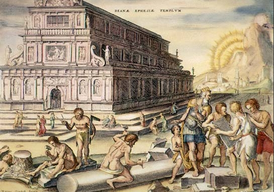

Temple of Artemis
- Date of construction:
- Circa 550 BC
- Builders:
- Greeks
- Locations:
- Selçuk, Turkey
Colossus of Rhodes
- Date of construction:
- 292–280 BC
- Builders:
- Greeks
- Locations:
- Rhodes, Greece

Hanging Gardens of Babylon
- Date of construction:
- Circa 600 BC
- Builders:
- Babylonians
- Locations:
- Rhodes, Greece